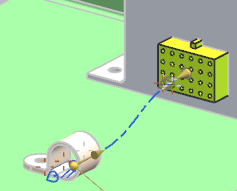
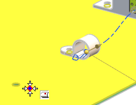
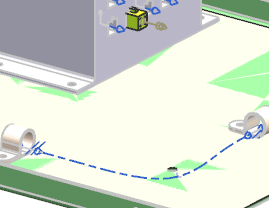

Construct a spline path
-
On the Routing Electrical toolbar, click Spline Path
 .
.
-
In the Path Points group, from the Method list, make sure Specify Points is selected.
-
Use
 to select the multi port on the connector, then the port on the clamp.
to select the multi port on the connector, then the port on the clamp.
-
If the Interpart Copy message window appears, first clear the Don’t display this message again check box, then 点击确定。

For your next point selection, use the Stock Offset Surface method.
-
From the Method list, select Stock Offset Surface.
Notice that now the only Snap Point option available on the Selection bar is
 .
.
-
Somewhere near the hole in the baseplate, select a point.

The face is WAVE–linked from the baseplate into the Work Part.
-
From the Method list, select Specify Points.
-
Use
to select the port on the second clamp.
-
Click OK to complete the segment.
